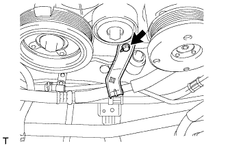
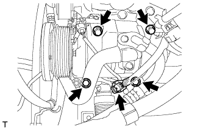

ДАТЧИК ПОЛОЖЕНИЯ КОЛЕНЧАТОГО ВАЛА > СНЯТИЕ |
| 1. СНИМИТЕ КОЖУХ ВЕНТИЛЯТОРА |
Снимите кожух вентилятора (Нажмите здесь).
| 2. ОТСОЕДИНИТЕ ЛОПАСТНОЙ НАСОС В СБОРЕ |
 |
Выверните болт и отсоедините нагнетательный патрубок.
 |
Отсоедините 2 разъема.
Выверните 2 болта и отсоедините лопастной насос.
| 3. СНИМИТЕ КОМПРЕССОР СИСТЕМЫ КОНДИЦИОНИРОВАНИЯ В СБОРЕ |
|  |
Выверните болт и отсоедините трубопровод низкого давления от двигателя.
|  |
Отсоедините разъем.
Выверните 4 болта и отсоедините компрессор системы кондиционирования.
| 4. СНИМИТЕ КРОНШТЕЙН КРЕПЛЕНИЯ КОМПРЕССОРА № 1 |
 |
Отверните 5 болта и снимите кронштейн опоры компрессора.
| 5. СНИМИТЕ ДАТЧИК ПОЛОЖЕНИЯ КОЛЕНЧАТОГО ВАЛА |
 |
Отсоедините разъем датчика положения коленчатого вала и открепите зажим жгута проводов.
 |
Выверните болт и снимите датчик положения коленчатого вала.